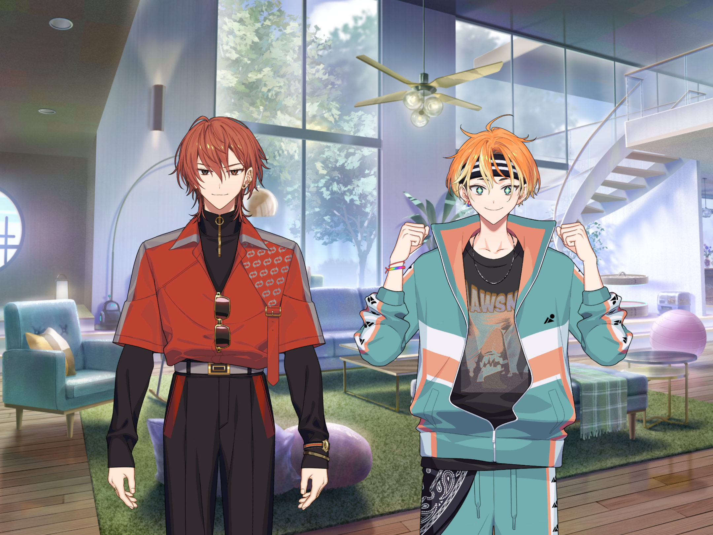
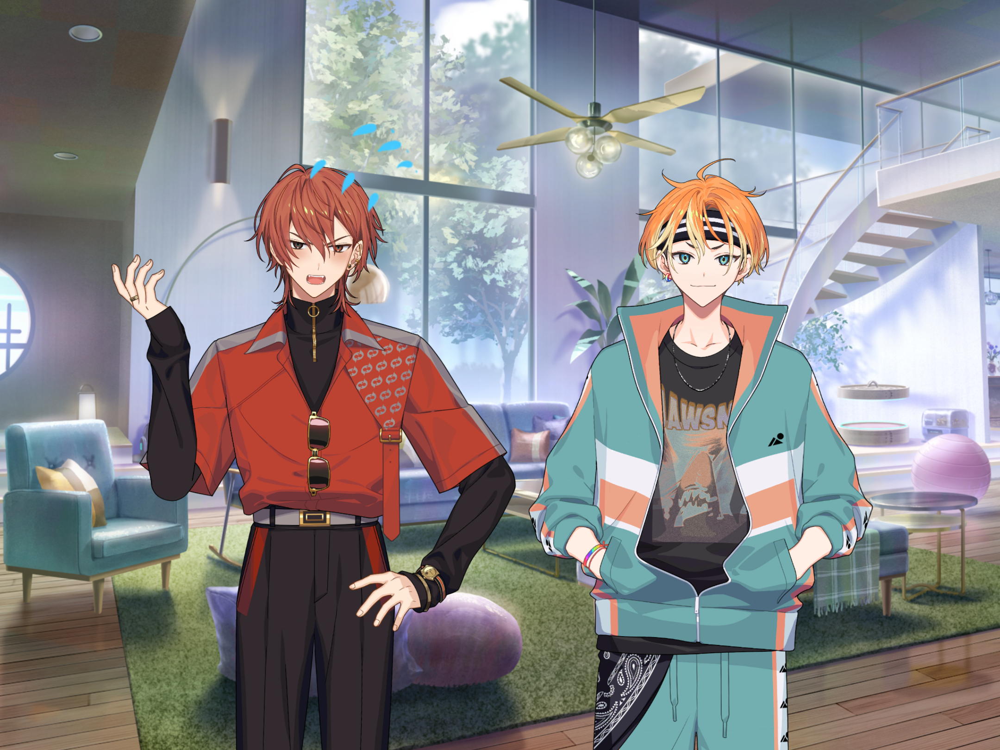
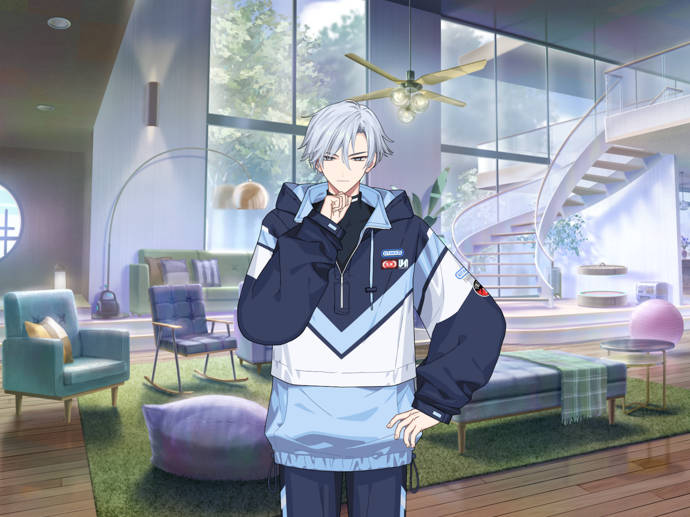
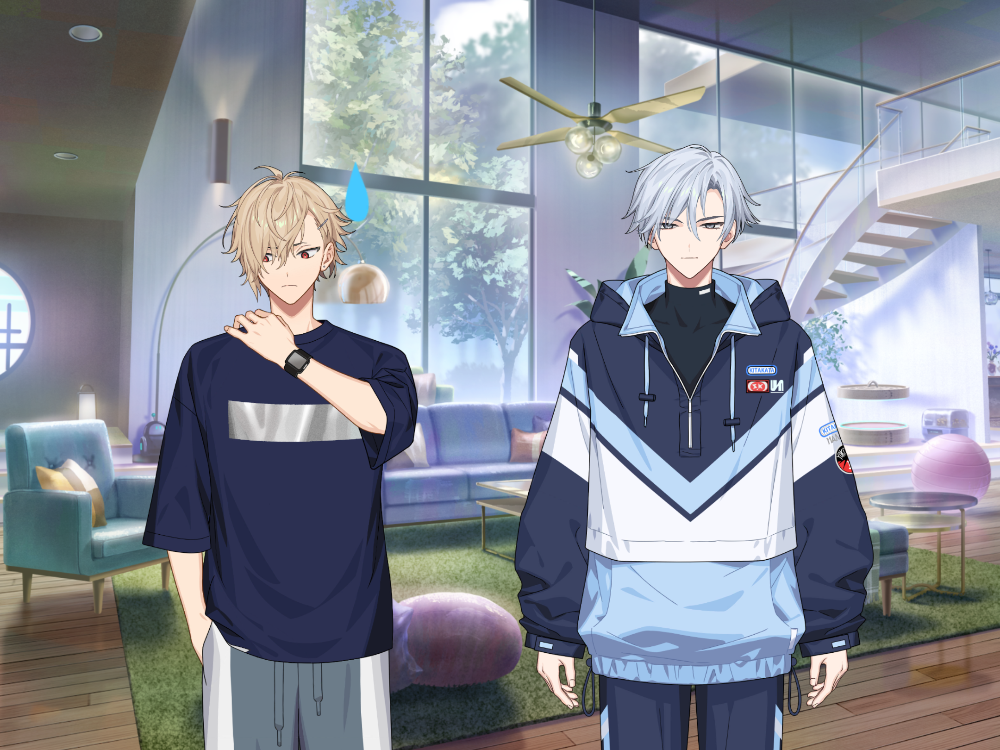
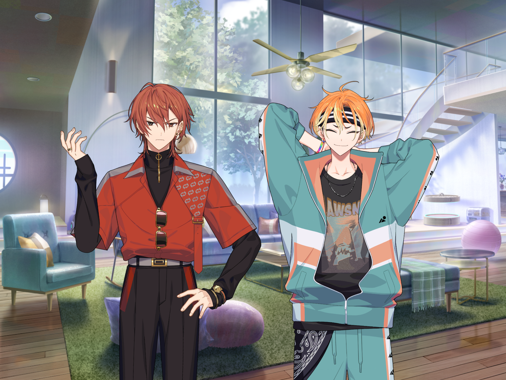

— Дім HAMA - Вітальня —


Каеде
Звучить дивовижно~. Ваші пригоди, схоже, були дуже веселими.

Ренґа
Місцеві були дуже привітні. Ми не змогли порозумітися з ними на всі сто, але їхні гостинні наміри справді досягли нас... І кожна страва там була неймовірно смачна.
Акута
Нє, реально! Ми їли та їли, ніби це була туса “їж, скільки влізе”! Я вважаю, що баранина перемогла з відривом!
Ренґа
Для мене... найсмачнішим був кумис[*]. Вечірка закінчилась тим, що ми пили його під зоряним небом.
Акута
Ренґа ледве лизнув, а вже нахилявся так, що став облизувати руки, мов льодяники~.

Ренґа
З-забудь про це вже!
Акута
Тіки не хвилюйся, вчителю, я чай пив. Такий молочний і дуже солений якийсь[*]? Просто бомба, реально!


Юкікадзе
Он як... Якщо тобі було смачно, як щодо того, щоб я пошукав рецепт і приготував якось?
Акута
Ура—!
Ренґа
... Але через це наші плани трохи зіпсувалися, і ґід розлютився на нас через зникнення.
Акута
Ага, соромно перед ґідом... але ЦЕ БУЛО ТАК ВЕСЕЛО!!
Ренґа
О, а ще, коли ми вже повертались, то люди сказали нам дещо. Це було не “прощавайте”, а “побачимось ще”. І вони нас проводжали, махаючи на прощання, поки ми не зникли за горизонтом.
Акута
Блііііін, коли про це думаю, то хочеться зразу застрибнути в літак і повернутися! Полетіли знов у Монголію!!
Каеде
(І Ренґа, й Акута посміхаються, коли згадують про подорож... вони прям блищать.) Перш за все, я радий, що ви чудово провели час. Але хочу також сказати, що я сильно розхвилювався, коли зі мною зв’язалися щодо вашого зникнення...


Ушіо
Ага, типу, зазвичай люди не губляться в Монголії, ні?
Юкікадзе
Вони двоє перевершили всі очікування. Мої ідеальні й енергійні молодші братики.
Ушіо
Каміно, ви надто з ними м’якосерді. Недобре так розпещувати людей.
Акута
Вибач, що змусили хвилюватися, вчителю!
Ренґа
Наступного разу будемо обережнішими.
Каеде
Добре, з цим нема проблем, тому що ви повернулися додому цілі. Як сувенір я почув про ваші пригоди. Тепер чекаю на ваші звіти про подорож.
Акута
Га?! Емм... звіт... Ну... ем... звіт там... Вчителю~, можемо вважати нашу розповідь за звіт цього разу~?
Каеде
Ну, я-то не проти, але...
Ушіо
Ти думаєш, що так ухилитись вийде з президентом?
Акута
Н-ні, аж ніяк!

Ренґа
Н-не хвилюйся, Акуто! Командна робота на те й потрібна. Я теж погано узагальнюю, тож чому б нам не поділитися ідеями та разом попрацювати?...
Акута
Я не проти. З об’єднаними силами Ренґи й мене все можливо! Так само все було, коли ми загубилися. Хутчіш закінчимо це! Підкоримо всі звіти! Підкоримо лист А4 і всі ті п'ять тисяч слів!!
Ренґа
Саме так. Ми вдвох швидко впораємося. Емм... як там було? Ем... тойво... Точно! Як по маслу!
Акута
Все так, все так!
Ушіо
Але і так ви все одно облажаєтеся. Типу, два дурні не роблять генія. Майбутнє виглядає похмурим.
Каеде
Ахахаха... (Може, це через те, що вони разом подолали негоду. Тепер вони здаються значно ближчими. Багато всього сталося в Монголії, але навіть незважаючи на це, я впевнений у тому, що це корисний для них обох досвід. Щиро радий за них!)
*Хоомей — монгольський тип горлового співу. ↩ Назад
*Біелгее — монгольський танець. ↩ Назад
*Кумис — кисломолочний напій із кобилячого молока. ↩ Назад
*Акута говорить про сутей цай — монгольський напій із зеленого чаю, молока, жиру, солі, борошна та рису. ↩ Назад